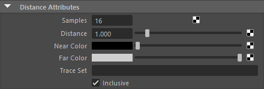
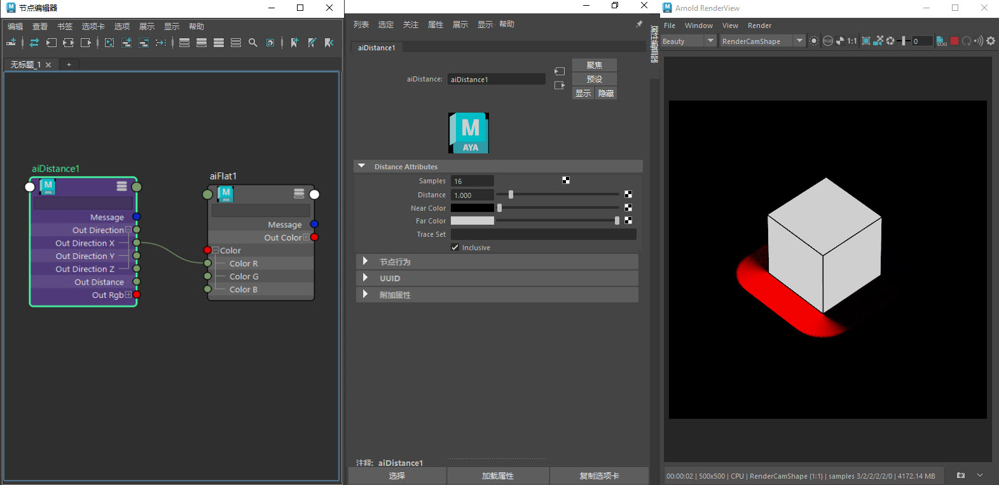

距离(Distance)
| 延伸阅读 |
| 有关完整的着色器文档，请参见《Arnold 用户手册》中的工具着色器。 |

距离 着色器使用采样光线来估算从着色点到最近曲面的距离。此距离将映射到从 near_color 到 far_color 的颜色线性渐变。您可以使用跟踪集在距离测量中包含或排除对象。
有关演示此距离 着色器的场景文件，请单击此处。
有关演示 distance.out_direction 的场景文件，请单击此处。

distance.out_directionX -> flat.colorR